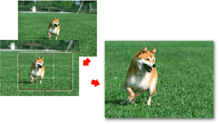

Cropping a photo is the act of removing the unnecessary portions of the photo by selecting the necessary portions.
Click (Crop Image) in the Layout/Print screen or double-click the preview image.
Drag the white squares on the image to adjust the area to be cropped and click OK.
 Note
NoteTo move the cropping area, place the cursor within the white frame and drag it. Drag the white lines to enlarge/reduce the cropping area.
Select the The Rule of Thirds checkbox to display white broken lines. To create a balanced composition, drag any of the intersecting points (white squares) or white broken lines over the main subject of the photo.

The cropping effect applies only to the print result. The original image will not be cropped.
See Help for details on the Crop window.